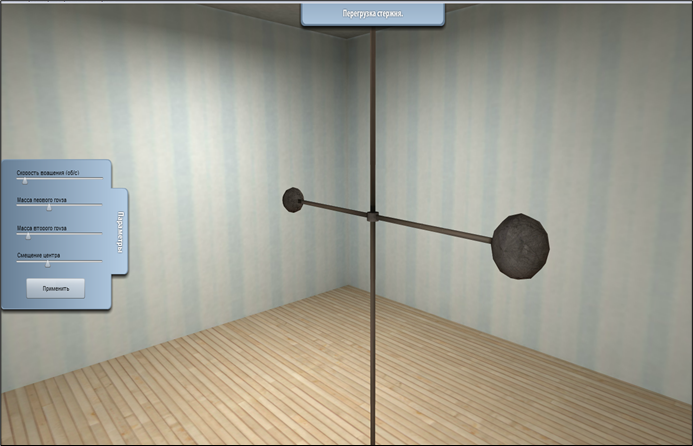

Имитационное моделирование — это метод исследования, при котором изучаемая система заменяется моделью, с достаточной точностью описывающей реальную систему, и с ней проводятся эксперименты для получения информации об этой системе. Экспериментирование с моделью называют имитацией.
Имитационное моделирование позволяет достаточно просто учитывать такие факторы, как наличие дискретных или непрерывных элементов, нелинейные характеристики, случайные воздействия и другие. Это делает метод универсальным инструментом анализа и синтеза сложных систем различной природы.
В авиационной отрасли имитационное моделирование широко применяется для тренировки пилотов, испытания новых конструкций летательных аппаратов и анализа аварийных ситуаций без риска для жизни.
Основное преимущество имитационного моделирования — возможность проведения экспериментов в условиях, когда натурные испытания невозможны, опасны или экономически нецелесообразны.